| A1 | 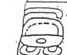 | Distance Number: [2 Tuns, 11 Winals, 2 K'ins] |
| B1a | u-ti-ya "it had happened" | |
| B1b | 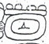 | Tzolkin: 9 Ahaw |
| A2a | Haab: [18] Sotz | |
| A2b | TAN-LAM "half-period ending" |
| B2 | a'kot-ha "he danced" | |
| C1 | ti-?? "with...." | |
| D1a | Yuknoom Ch'een | |
| D1b | 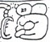 | K'uhul Chan Ahaw "Holy Lord of Calakmul" |
| C2a | yi-ta-hi "he was accompanied by" | |
| C2b | 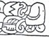 | B'alah Chan K'awiil |
| D2a | 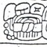 | K'uhl Mutul Ahaw "Holy Lord of Mutul" |
| D2b | 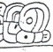 | i u-ti and "then it happened" |
| E1 | Calendar Round: 11 Ik' 10 Muwan |
| F1a | 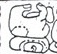 | tzutz-yi "was completed" |
| F1b | 3-tal"the third" | |
| E2a | 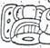 | K'atun |
| E2b | 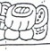 | B'alah Chan |
| F2a | 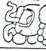 | K'awiil |
| F2b | 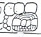 | K'uhul Mutul Ahaw"Holy Lord of Mutul" |